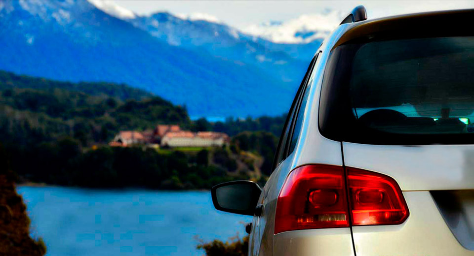
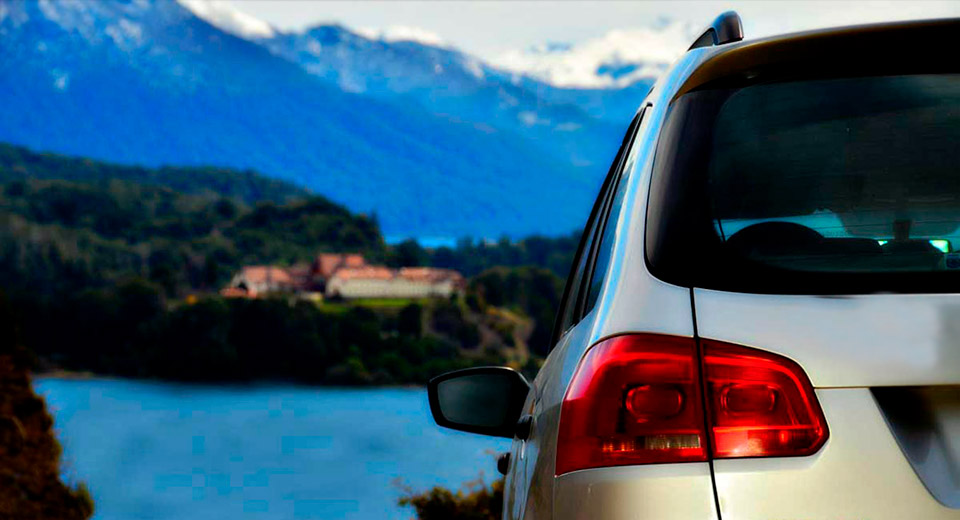
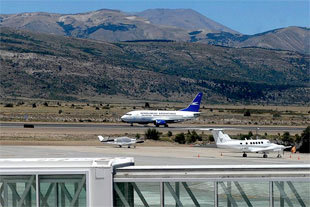
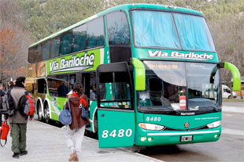
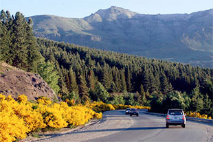

Como llegar a Bariloche
Bariloche se encuentra muy bien conectada con el resto del país por medio de rutas, compañías aéreas y empresas de micros.
También se puede llegar a Bariloche viajando en auto
Bariloche se encuentra muy bien conectada con el resto del país por medio de rutas, compañías aéreas y empresas de micros.
También se puede llegar a Bariloche viajando en auto
Diferentes compañías aéreas vuelan a Bariloche, la mayoría de ellas desde Buenos Aires.Algunas veces las empresas aéreas ofrecen promociones y los pasajes de avión cuesta parecido a los de micros. Las dos compañías aéreas que más vuelos tienen a Bariloche desde Buenos Aires son: Aerolíneas Argentinas y Latam. También llegan a Bariloche LADE, Andes y FlyBondi.
También hay vuelos desde Córdoba, Rosario, Neuquén, Mar del Plata, Viedma, Puerto Madryn y El Calafate.
Volar es la forma más rápida y cómoda de viajar a Bariloche.
Muchos son las personas que eligen viajar a Bariloche en ómnibus o micros.
Diariamente diferentes empresas de micros realizan viajes a Bariloche.
Los micros que viajan a Bariloche son modernos, seguros y confortables. Existen muchas empresas que ofrecen diferentes servicios desde económico hasta algunos que incluyen cena, bebidas, wifi, etc.
El viaje en micro a Bariloche puede llevar más de 20 horas. Puede ser una buena opción viajar durante la mayor parte de la noche. Viajar en micro también permite conocer diferentes paisajes del sur del país.
El tiempo de viaje en micro desde Buenos Aires a Bariloche es de 21 a 24 horas.
Muchas personas deciden viajar a Bariloche con su propio auto.
Viajar a Bariloche en auto desde Buenos Aires es toda una experiencia ya que se debe atravesar diferentes paisajes y por lo general se debe pasar la noche en alguna ciudad o pueblo en el camino. Al viajar en auto de Buenos Aires a Bariloche se podrá descubrir diferentes regiones como la pampa húmeda, la estepa patagónica, desiertos y los cerros de le pre-cordillera. Manejar en la Patagonia siempre es una verdadera aventura, rutas poco transitadas, largas rectas y hermosos y desolados paisajes.
La ruta para llegar a Bariloche en general se encuentra en buen estado, con algunos tramos mejor que otros por lo que siempre se debe manejar con precaución. En el camino se encuentran diferentes pueblos y ciudades que ofrecen los diferentes servicios como estaciones de servicios, hoteles, restaurantes y comedores, gomerías y talleres mecánicos.
A medida que uno se adentra a la Patagonia (en La Pampa) los pueblos con servicios están cada vez más espaciados.
Por las largas distancias muchos viajantes deciden hacer noche en algún pueblo en el camino y realizar el viaje en dos jornadas.
Buenos Aires: 1.580 km.
Córdoba: 1.565 km.
Rosario: 1.581 km.
Mendoza: 1.216 km.
Tucumán: 2.093 km.
Corrientes: 2.396 km.
Bahía Blanca: 962 km.
San Martín de los Andes: 190 km.
Esquel: 285 km.
Puerto Madryn: 928 km.